[14-1] WDG看门狗 — 学习笔记
- 课程：江协科技《STM32入门教程-2023版 细致讲解 中文字幕》
- 视频：BV1th411z7sn?p=46，40:07（2407 秒）
- 素材：241 帧关键帧（每 10 秒，宽 1280px）+ PP-OCRv4 画面硬字幕 OCR（752 段）；关键截图 18 张随笔记收录（源图在
vidsum_out/stm32_p46/frames/，站内图片在assets/images/stm32-46/） - 字幕情况：该集 B 站没有 CC/AI 字幕，文本由画面烧录的中文字幕 OCR 得到（source=subtitle-ocr）；错字主要是
运行→ 「云行」（6 处）、看门狗→ 「看润狗/看闪狗/看阅狗」（4 处）、循环→ 「盾环」（2 处）、数据→ 「数居」（1 处），并混入幻灯片页码与英文原文——这些不是口述内容，已剔除/校正（清单见文末「存疑」）。 - 本集定位：混合课——00:00–04:15 只演示两个已写好的工程（
14-1 独立看门狗、14-2 窗口看门狗，含代码展示，没有从零写码过程）；04:15–40:07 全是 PPT 理论 + 手册精读。结尾 40:04「本小节课到这里就结束了」，无下集预告。
一句话结论
看门狗（WDG，Watchdog）可以监控程序的运行状态：当程序因设计漏洞、硬件故障、电磁干扰等原因出现卡死或跑飞时，看门狗能及时复位程序，避免程序长时间「罢工」，保证系统的可靠性和安全性。本质是一个定时器——在指定时间范围内，程序没有执行喂狗（重置计数器）操作时，看门狗硬件电路就自动产生复位信号。STM32 内置两个看门狗：IWDG 独立看门狗（独立工作，对时间精度要求较低）、WWDG 窗口看门狗（要求看门狗在精确计时窗口起作用）。为什么需要它：复杂项目的状态与可能性极多，bug 无法避免；常见解决手段是「已知 bug 写处理逻辑」+「看门狗兜底」——看门狗不能解决 bug 本身，但能让偶发卡死的程序回到正轨；局限是硬件关键器件损坏时复位也没用，而且不能因为有看门狗就写大量死循环/不规范程序。与普通定时器的区别：定时器时基单元＝PSC 预分频器 + CNT 计数器 + ARR 自动重装器，减到 0 产生更新事件与中断、并由硬件自动重装；看门狗则是 ①必须自减 ②减到 0 直接产生复位（不是中断）③没有自动重装，必须由程序在减到 0 之前手动重装＝喂狗。IWDG（图157）：LSI 40kHz → 8 位预分频器（IWDG_PR，PR[2:0]）→ 12 位递减计数器（最大 2^12−1＝4095）→ 减到 0 产生 IWDG 复位；IWDG_RLR 的 12 位重装载值（RL[11:0]）经「12 位重装载数值」送进计数器；另有 IWDG_SR（只有 RVU/PVU 两个更新同步位，基本不用看）与 IWDG_KR 键寄存器。IWDG 位于 VDD 供电区（不是 1.8V 区），所以在停机模式和待机模式下仍能正常工作。IWDG 键寄存器（核心）：它本质是控制寄存器，但为避免干扰，用「整个键寄存器写入特定值」代替「给控制寄存器写一位」（16 位全比对，抗干扰强；键值都是 1/0 交替的刁钻组合）——0xCCCC 启用独立看门狗、0xAAAA 把 IWDG_RLR 的值重新加载到计数器（喂狗）、0x5555 解除 IWDG_PR / IWDG_RLR 的写保护、0x5555 之外的其他值启用写保护；写 PR/RLR 前必须先写 0x5555，写完再写任意值恢复保护。IWDG 超时公式：T_IWDG = T_LSI × PR 预分频系数 × (RL + 1)，其中 T_LSI = 1/F_LSI = 1/40kHz = 0.025ms（等价说法：超时频率＝LSI 频率/预分频/重装值）。表83（LSI 40kHz）：/4（PR=0）0.1～409.6ms、/8（1）0.2～819.2、/16（2）0.4～1638.4、/32（3）0.8～3276.8、/64（4）1.6～6553.6、/128（5）3.2～13107.2、/256（6 或 7）6.4～26214.4ms；分频系数每翻一倍，超时时间也翻一倍。WWDG（图158）：PCLK1（36MHz）→ 固定 /4096（框图中未画出）→ 看门狗预分频器 WDGTB（1/2/4/8）→ 6 位递减计数器；计数器值在 WWDG_CR（含 WDGA 激活位 + T6～T0），窗口值 W[6:0] 在 WWDG_CFR；比较器「当 T[6:0] > W[6:0] 比较结果＝1」；或门合成两路复位：①T6 溢出标志位（T6 变 0 即溢出）②窗口比较结果（喂狗太早）；两路都经 WDGA 与门才输出复位。T6 是「被单独拎出来」的溢出标志位，真正有效的计数值是低 6 位 T[5:0]——作者反复强调这点「后面还会多次提到」。WWDG 工作特性（4 条）：①递减计数器 T[6:0] 的值小于 0x40 时，WWDG 产生复位（喂狗太晚）②T[6:0] 在窗口 W[6:0] 外被重新装载时，WWDG 产生复位（喂狗太早）③T[6:0] 等于 0x40 时可产生早期唤醒中断（EWI），用于重装载计数器以避免 WWDG 复位——俗称「死前中断」，可在其中保存重要数据、关闭危险设备，或直接喂狗④定期写入 WWDG_CR 寄存器（喂狗）以避免 WWDG 复位。配 图159 窗口看门狗时序图：纵轴 T[6:0]，画出 W[6:0] 窗口值与 3Fh，分「不允许刷新」与「刷新窗口」两段，T6 位在 3Fh→0 时翻转并产生复位。WWDG 超时/窗口公式：T_WWDG = T_PCLK1 × 4096 × WDGTB 预分频系数 × (T[5:0] + 1)；T_WIN = T_PCLK1 × 4096 × WDGTB 预分频系数 × (T[5:0] − W[5:0])；其中 T_PCLK1 = 1/F_PCLK1。4096 是框图中没画出的固定分频（36MHz 太快，先固定 /4096 再送 WDGTB）；WDGTB 的分频系数＝2^WDGTB（0→1、1→2、2→4、3→8）。手册表（PCLK1＝36MHz）：WDGTB=0 → 113µs～7.28ms、1 → 227µs～14.56ms、2 → 455µs～29.12ms、3 → 910µs～58.25ms；窗口时间手册不给表，需自己套公式（先定超时时间再算窗口时间）。对比表（8 项）：复位（计数器减到 0 后 / 计数器 T[5:0] 减到 0 后、过早重装计数器）、中断（无 / 早期唤醒中断）、时钟源（LSI 40KHz / PCLK1 36MHz）、预分频系数（4、8、32、64、128、256 / 1、2、4、8；对比表漏了 16，表83/手册有 /16 共七档）、计数器（12 位 / 6 位（有效计数））、超时时间（0.1ms～26214.4ms / 113µs～58.25ms）、喂狗方式（写键寄存器重装固定值 RLR / 直接写计数器，写多少重装多少）、防误操作（键寄存器和写保护 / 无）、用途（独立工作、对时间精度要求较低 / 要求在精确计时窗口起作用）。手册精读：第 17 章 IWDG（17.1 简介、17.2 主要特性、17.3 功能描述、17.3.3 框图、17.4 寄存器描述、17.4.5 寄存器映像 表84）——LSI 实际在 30K～60K 之间变化、并不精确，所以超时时间只能按 40kHz 估算；键值表里只有「启动看门狗」指令、没有「关闭」指令 → 看门狗一旦开启就无法关闭（防止误操作关掉，「既然养狗了，怎么会让你随便弃养」）；IWDG 的 CNT 计数器不开放读写，运行中看不到当前计数值（对调试不友好）。第 18 章 WWDG（18.1 简介/主要特性、18.3 功能描述、18.4 如何编写看门狗超时程序、18.6 寄存器描述、18.6.4 寄存器映像 表85）——警告：系统复位后必须始终置 T6 位为 1，以避免立即产生复位；WDGA 位置 1 后不能再关闭（只有复位能关）；递减计数器处于自由运行状态，即使看门狗被禁止也继续递减；上电开启时一定要先给个重装值，否则立即复位。片头两个成品工程：14-1 独立看门狗——先判复位来源 RCC_GetFlagStatus(RCC_FLAG_IWDGRST)（SET 则显示 IWDG RST 并 RCC_ClearFlag()，否则显示 RST）；初始化 IWDG_WriteAccessCmd(IWDG_WriteAccess_Enable) → IWDG_SetPrescaler(IWDG_Prescaler_16) → IWDG_SetReload(2500) //1000ms → IWDG_ReloadCounter() → IWDG_Enable()；主循环 IWDG_ReloadCounter() + 显示 FEED + Delay_ms(200) + 清空 + Delay_ms(600)——喂狗间隔 200+600＝800ms < 1000ms。14-2 窗口看门狗——同样判 RCC_FLAG_WWDGRST；RCC_APB1PeriphClockCmd(RCC_APB1Periph_WWDG, ENABLE) → WWDG_SetPrescaler(WWDG_Prescaler_8) → WWDG_SetWindowValue(0x40 + 21) //30ms（0x40＝64，+21＝0x55）；主循环 Delay 20+20＝40ms 喂狗，落在 30～50ms 窗口内；用「按键阻塞式 Key_GetNum」模拟程序卡死 → 看门狗复位。两程序现象：正常复位显示 RST，看门狗复位显示对应的 IWDG RST / WWDG RST。
0. 本集定位：混合课（片头演示成品 + 理论详解）
- 00:00–04:15：只演示两个已写好的工程（含代码展示），没有从零写码；
- 04:15–40:07：全是 PPT（WDG 简介 → 与定时器对比 → IWDG 框图/键寄存器/超时公式 → WWDG 框图/工作特性/超时公式 → 对比表）+ 手册第 17/18 章；
- 结尾 40:04「本小节课到这里就结束了」，无下集预告。
1. 片头两个成品工程
1.1 程序①：14-1 独立看门狗
int main(void)
{
OLED_Init();
OLED_ShowString(1, 1, "IWDG TEST");
/* 判断复位来源 */
if (RCC_GetFlagStatus(RCC_FLAG_IWDGRST) == SET)
{
OLED_ShowString(2, 1, "IWDG RST");
Delay_ms(500);
OLED_ShowString(2, 1, " ");
Delay_ms(100);
RCC_ClearFlag(); /* 清除复位标志 */
}
else
{
OLED_ShowString(3, 1, "RST");
Delay_ms(500);
OLED_ShowString(3, 1, " ");
Delay_ms(100);
}
/* 独立看门狗初始化 */
IWDG_WriteAccessCmd(IWDG_WriteAccess_Enable); /* 解除 PR/RLR 写保护 */
IWDG_SetPrescaler(IWDG_Prescaler_16); /* 16 分频 */
IWDG_SetReload(2500); /* 1000ms */
IWDG_ReloadCounter(); /* 重装计数器 */
IWDG_Enable(); /* 启用 IWDG */
while (1)
{
Key_GetNum();
IWDG_ReloadCounter(); /* 喂狗 */
OLED_ShowString(4, 1, "FEED");
Delay_ms(200);
OLED_ShowString(4, 1, " ");
Delay_ms(600);
}
}
- 喂狗间隔 = 200 + 600 = 800ms < 1000ms（
IWDG_SetReload(2500)+ 16 分频 → 1000ms）——赶在超时前喂狗，所以不会复位； - 复位来源判断：
RCC_GetFlagStatus(RCC_FLAG_IWDGRST)为 SET 说明是看门狗复位，显示IWDG RST；否则是正常复位，显示RST。
1.2 程序②：14-2 窗口看门狗
int main(void)
{
OLED_Init();
OLED_ShowString(1, 1, "WWDG TEST");
if (RCC_GetFlagStatus(RCC_FLAG_WWDGRST) == SET)
{
OLED_ShowString(2, 1, "WWDG RST");
Delay_ms(500);
OLED_ShowString(2, 1, " ");
Delay_ms(100);
RCC_ClearFlag();
}
else
{
OLED_ShowString(3, 1, "RST");
Delay_ms(500);
OLED_ShowString(3, 1, " ");
Delay_ms(100);
}
RCC_APB1PeriphClockCmd(RCC_APB1Periph_WWDG, ENABLE); /* WWDG 挂在 APB1 */
WWDG_SetPrescaler(WWDG_Prescaler_8); /* 8 分频 */
WWDG_SetWindowValue(0x40 + 21); /* 30ms 窗口 */
WWDG_Enable(0x40 + 21); /* 使能并给初值 */
...
while (1)
{
...
Delay_ms(20);
WWDG_SetCounter(0x40 + 21); /* 喂狗 */
Delay_ms(20);
}
}
WWDG_SetWindowValue(0x40 + 21)：0x40是 T6 位为 1 的基准（0x40＝64），+21 得 0x55；配合 8 分频，形成 30ms 的窗口、超时约 50ms；- 主循环
Delay 20+20＝40ms喂狗——落在 30～50ms 窗口内：喂太早（窗口外）会复位、喂太晚（低于 0x40）也会复位； - 用「按键阻塞式
Key_GetNum()」模拟程序卡死——按住按键时主循环不喂狗，看门狗超时 → 复位，OLED 显示WWDG RST。
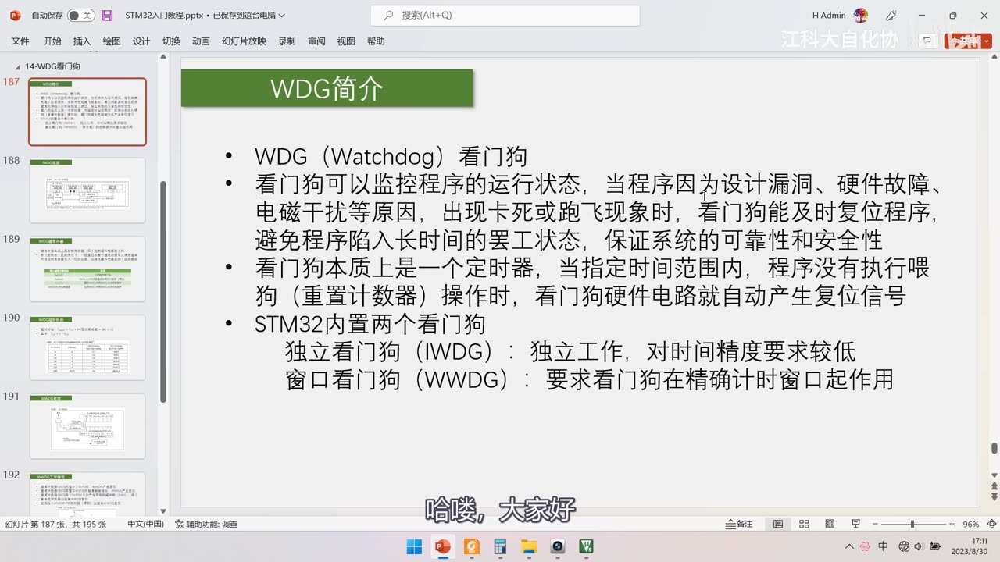
*图 1：PPT「WDG简介」4 条——WDG（Watchdog）看门狗；可以监控程序的运行状态，当程序因设计漏洞、硬件故障、电磁干扰等原因出现卡死或跑飞时及时复位，避免长时间「罢工」，保证系统可靠性与安全性；本质是一个定时器，指定时间范围内程序没执行**喂狗（重置计数器）**操作时，看门狗硬件电路自动产生复位信号；STM32 内置两个看门狗：IWDG 独立看门狗（独立工作，对时间精度要求较低）、WWDG 窗口看门狗（要求看门狗在精确计时窗口起作用）；字幕「哈喽，大家好」*
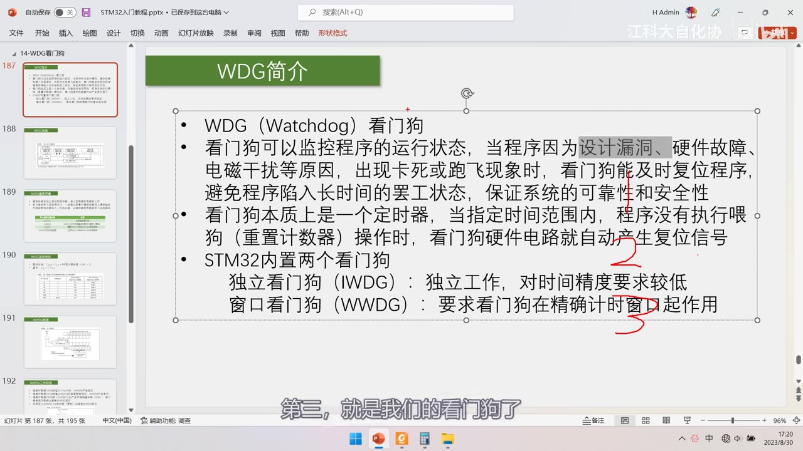
图 2：同页 PPT + 红笔标注 ①②③——①圈「设计漏洞、硬件故障、电磁干扰」②圈「本质是一个定时器…自动产生复位信号」③圈「STM32 内置两个看门狗」；字幕「第三，就是我们的看门狗了」
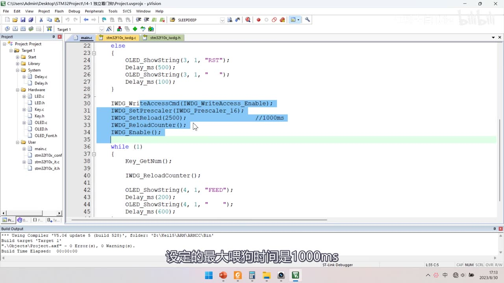
图 3：14-1 独立看门狗 main.c——复位来源判断（RCC_GetFlagStatus(RCC_FLAG_IWDGRST)，SET 显示 IWDG RST 并 RCC_ClearFlag()，否则显示 RST）；IWDG_WriteAccessCmd(IWDG_WriteAccess_Enable);、IWDG_SetPrescaler(IWDG_Prescaler_16);、IWDG_SetReload(2500); //1000ms、IWDG_ReloadCounter();、IWDG_Enable();；主循环 Key_GetNum(); IWDG_ReloadCounter(); OLED_ShowString(4,1,"FEED"); Delay_ms(200); … Delay_ms(600);；字幕「设定的最大喂狗时间是1000ms」
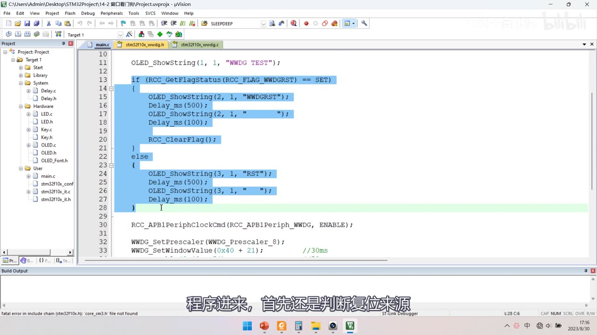
图 4：14-2 窗口看门狗 main.c——OLED_ShowString(1, 1, "WWDG TEST");、if (RCC_GetFlagStatus(RCC_FLAG_WWDGRST) == SET) { OLED_ShowString(2,1,"WWDG RST"); … RCC_ClearFlag(); } else { OLED_ShowString(3,1,"RST"); … }、RCC_APB1PeriphClockCmd(RCC_APB1Periph_WWDG, ENABLE);、WWDG_SetPrescaler(WWDG_Prescaler_8);、WWDG_SetWindowValue(0x40 + 21); //30ms；字幕「程序进来，首先还是判断复位来源」
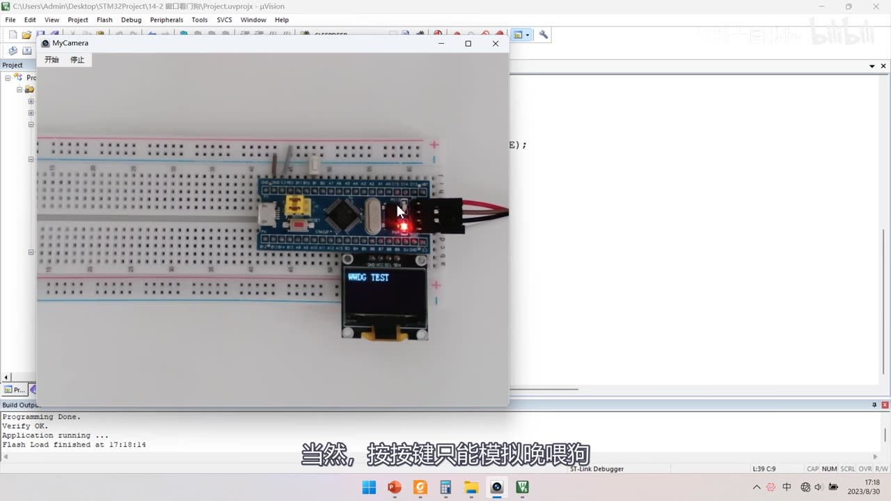
图 5：程序②现象——OLED 显示 WWDG TEST（面包板上 STM32 最小系统板 + OLED）；字幕「当然，按按键只能模拟晚喂狗」
2. 与普通定时器的对比
- 普通定时器时基单元（图57 定时中断基本结构）：PSC 预分频器 + CNT 计数器 + ARR 自动重装器——输入时钟经预分频后驱动计数器自增/自减，减到 0 产生更新事件和中断，并由硬件自动重装；
- 看门狗的三点不同：
- 必须自减（不能自增）；
- 减到 0 直接产生复位（不是中断）；
- 没有自动重装器——必须在减到 0 之前由程序手动重装，这就是「喂狗」；
- 作者用「定时器是闹钟，看门狗是定时炸弹」类比：闹钟响了没事，炸弹到点就炸（复位）。
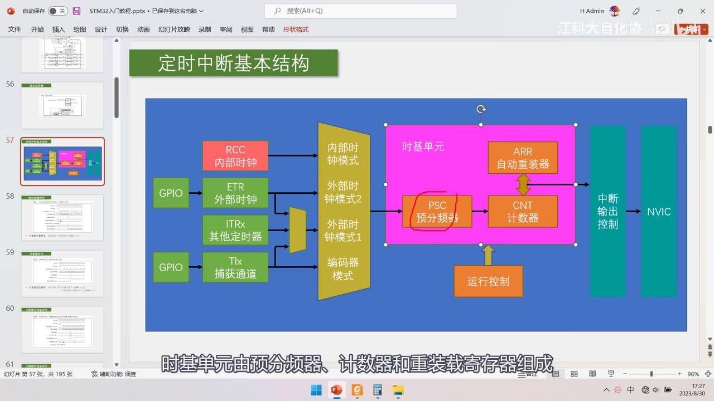
图 6：PPT「定时中断基本结构」图57——RCC 内部时钟 / ETR 外部时钟 / ITRx 其他定时器 / TIx 捕获通道 → 时钟模式选择 → 时基单元（PSC 预分频器 + CNT 计数器 + ARR 自动重装器） → 中断输出控制 → NVIC；运行控制；字幕「时基单元由预分频器、计数器和重装载寄存器组成」
3. IWDG 独立看门狗
3.1 框图（图157）
- LSI 40kHz（内部低速时钟）→ 8 位预分频器（由 IWDG_PR 的 PR[2:0] 控制）→ 驱动 12 位递减计数器，减到 0 产生 IWDG 复位；
- IWDG_RLR（重装寄存器，RL[11:0]）的值经「12 位重装载数值」送进计数器——喂狗就是把它重新装进计数器；
- IWDG_SR（状态寄存器）：只有 RVU（重装值更新）与 PVU（预分频值更新）两个同步位，基本不用看；
- IWDG_KR（键寄存器）：控制启停与喂狗（见 3.2）；
- 12 位计数器最大值＝2^12−1＝4095；
- ⚠ IWDG 位于 VDD 供电区（不是 1.8V 区域）：所以在停机和待机模式下仍能正常工作（这也是「独立」的含义之一）。
3.2 键寄存器 IWDG_KR（核心）
- 本质是控制寄存器，但为避免干扰，用「整个键寄存器写入特定值」代替「给控制寄存器某一位写值」——16 位全比对，抗干扰强，键值都是 1/0 交替的「刁钻组合」；
- 四个键值：
| 写入 IWDG_KR 的值 | 作用 |
|---|---|
| 0xCCCC | 启用独立看门狗 |
| 0xAAAA | 把 IWDG_RLR 的值重新加载到计数器（喂狗） |
| 0x5555 | 解除 IWDG_PR 和 IWDG_RLR 的写保护 |
| 0x5555 之外的其他值 | 启用 IWDG_PR 和 IWDG_RLR 的写保护 |
- 所以写 PR/RLR 之前必须先写 0x5555，写完再写任意值恢复写保护（库函数里就是
IWDG_WriteAccessCmd(IWDG_WriteAccess_Enable/Disable)）。
3.3 超时时间公式与表83
T_IWDG = T_LSI × PR 预分频系数 × (RL + 1)；T_LSI = 1/F_LSI = 1/40kHz = 0.025ms；- 等价说法：超时频率＝LSI 频率 / 预分频 / 重装值；
- 表83（40kHz 输入时钟 LSI）：
| 预分频系数 | PR[2:0] 位 | 最短时间（ms，RL=0x000） | 最长时间（ms，RL=0xFFF） |
|---|---|---|---|
| /4 | 0 | 0.1 | 409.6 |
| /8 | 1 | 0.2 | 819.2 |
| /16 | 2 | 0.4 | 1638.4 |
| /32 | 3 | 0.8 | 3276.8 |
| /64 | 4 | 1.6 | 6553.6 |
| /128 | 5 | 3.2 | 13107.2 |
| /256 | 6 或 7 | 6.4 | 26214.4 |
- 规律：分频系数每翻一倍，超时时间也翻一倍；
- 验算（对应程序①）：
IWDG_SetReload(2500)、16 分频 →T = 0.025ms × 16 × (2500+1) ≈ 1000.4ms✓——这就是注释里「//1000ms」的来历。
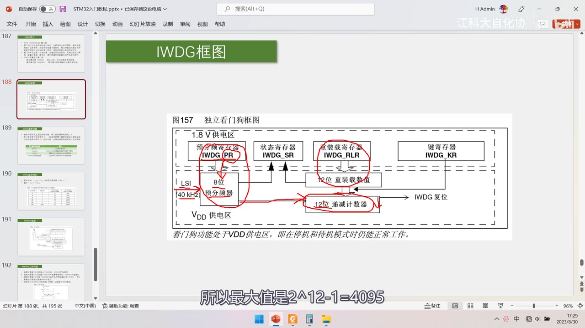
图 7：PPT「IWDG框图」图157——上方 1.8V 供电区：预分频寄存器 IWDG_PR、状态寄存器 IWDG_SR、重装载寄存器 IWDG_RLR、键寄存器 IWDG_KR；下方 VDD 供电区：LSI 40kHz → 8 位预分频器 → 12 位递减计数器 → IWDG 复位，另有「12 位重装载数值」；图注「看门狗功能处于 VDD 供电区，即在停机和待机模式时仍能正常工作」；红圈标注各寄存器；字幕「所以最大值是2^12-1=4095」
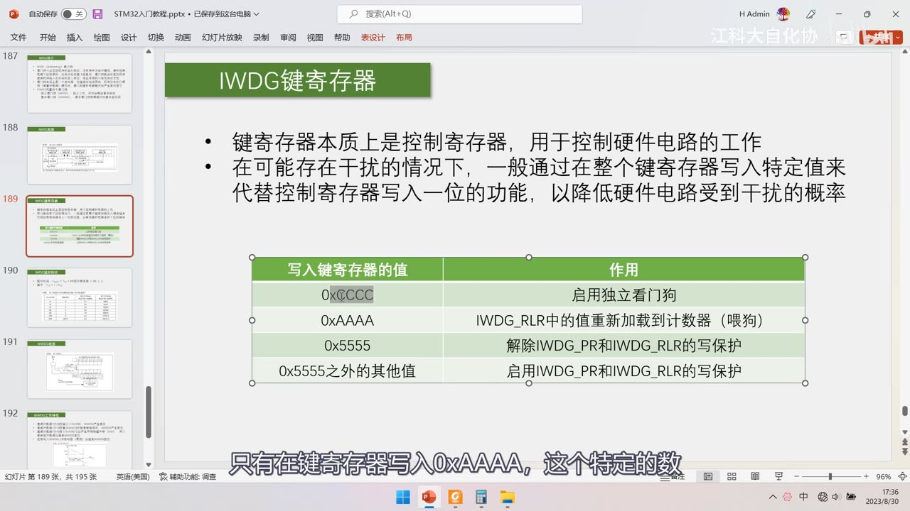
*图 8：PPT「IWDG键寄存器」——键寄存器本质上是控制寄存器，用于控制硬件电路的工作；在可能存在干扰的情况下，一般通过在整个键寄存器写入特定值来代替控制寄存器写入一位的功能，以降低硬件电路受到干扰的概率；表格：0xCCCC 启用独立看门狗、0xAAAA IWDG_RLR 中的值重新加载到计数器（喂狗）、0x5555 解除 IWDG_PR 和 IWDG_RLR 的写保护、0x5555 之外的其他值启用写保护；字幕「只有在键寄存器写入0xAAAA，这个特定的数」*
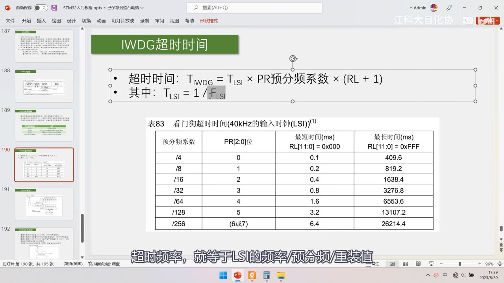
*图 9：PPT「IWDG超时时间」——T_IWDG = T_LSI × PR 预分频系数 × (RL + 1)，其中 T_LSI = 1/F_LSI；表83 看门狗超时时间（40kHz 的输入时钟 LSI）：/4(0) 0.1～409.6、/8(1) 0.2～819.2、/16(2) 0.4～1638.4、/32(3) 0.8～3276.8、/64(4) 1.6～6553.6、/128(5) 3.2～13107.2、/256(6或7) 6.4～26214.4 ms；字幕「超时频率，就等于LSI的频率/预分频/重装值」*
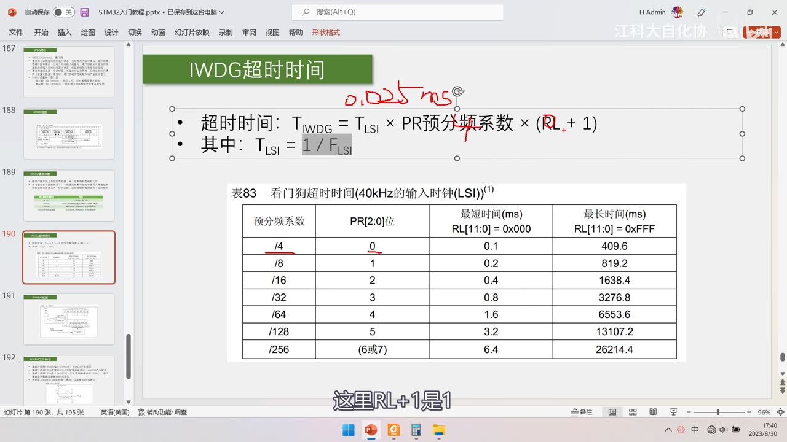
图 10：同页 + 红笔——公式上方手写 0.025ms、并把 × (RL + 1) 圈出；字幕「这里RL+1是1」（说明 RL＝0 时超时就是最短时间）
4. WWDG 窗口看门狗
4.1 框图（图158）
- PCLK1（36MHz，来自 RCC 时钟控制器）→ 看门狗预分频器 WDGTB（1/2/4/8）→ 6 位递减计数器（CNT）；
- 注意：公式里还要乘一个框图中未画出的固定 4096 分频——36MHz 太快，先固定 /4096 再送 WDGTB；
- 计数器值在 WWDG_CR：WDGA（激活位）+ T6～T0（其中 T6～T0 是 7 位，实际有效计数是低 6 位 T[5:0]，T6 单独作溢出标志位）；
- 窗口值 W[6:0] 在 WWDG_CFR（另有 EWI 中断使能与 WDGTB[1:0]）；
- 比较器：「当 T[6:0] > W[6:0]，比较结果＝1」（即当前计数值还在窗口之上 → 此刻喂狗属于「太早」）；
- 两路复位经或门、再经 WDGA 与门输出复位：
- T6 溢出标志位（T6 变成 0 即计数器溢出）；
- 窗口比较结果（在窗口外重装 → 喂狗太早）；
- 只有在 WDGA＝1（看门狗已激活） 时，复位信号才能输出。
4.2 工作特性（4 条）与图159 时序图
- 递减计数器 T[6:0] 的值小于 0x40 时，WWDG 产生复位（喂狗太晚——计数器已经掉到 0x3F 以下）；
- T[6:0] 在窗口 W[6:0] 之外被重新装载时，WWDG 产生复位（喂狗太早——还没降到窗口里就喂了）；
- T[6:0] 等于 0x40 时可以产生早期唤醒中断（EWI），用于重装载计数器以避免 WWDG 复位——俗称「死前中断」：可以在这里保存重要数据、关闭危险设备，或者直接喂狗把计数器拉回去；
- 定期写入 WWDG_CR 寄存器（喂狗）以避免 WWDG 复位；
- 图159 窗口看门狗时序图：纵轴是 T[6:0]，画出 W[6:0] 窗口值与 3Fh 两条水平线，横轴是时间，分成「不允许刷新」（T[6:0] 高于 W 的区间）与「刷新窗口」（W 与 0x40 之间）两段；T6 位在计数器从 3Fh 掉到 0 时翻转，同时产生复位。
4.3 超时时间与窗口时间公式
- 超时时间：
T_WWDG = T_PCLK1 × 4096 × WDGTB 预分频系数 × (T[5:0] + 1)； - 窗口时间：
T_WIN = T_PCLK1 × 4096 × WDGTB 预分频系数 × (T[5:0] − W[5:0])； - 其中
T_PCLK1 = 1/F_PCLK1（36MHz 时＝1/36µs）； - WDGTB 的分频系数＝2^WDGTB：WDGTB＝0→1 分频、1→2、2→4、3→8；
- 4096 是框图中没画出的固定分频（务必别漏乘）；
- 手册表（PCLK1＝36MHz，最小/最大超时时间）：
| WDGTB | 最小超时时间 | 最大超时时间 |
|---|---|---|
| 0 | 113µs | 7.28ms |
| 1 | 227µs | 14.56ms |
| 2 | 455µs | 29.12ms |
| 3 | 910µs | 58.25ms |
- 窗口时间手册不给表，需要自己套公式：先按需求定超时时间，再算窗口时间。
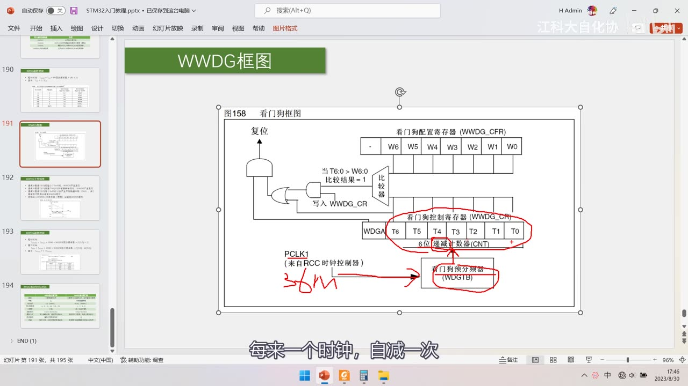
*图 11：PPT「WWDG框图」图158 + 红笔——PCLK1 处手写「36M」并箭头指向看门狗预分频器（WDGTB）；红圈圈出 WWDG_CR 的 T6～T0 段与 WDGTB；比较器旁写「当 T6:0 > W6:0 比较结果＝1」；字幕「每来一个时钟，自减一次」*
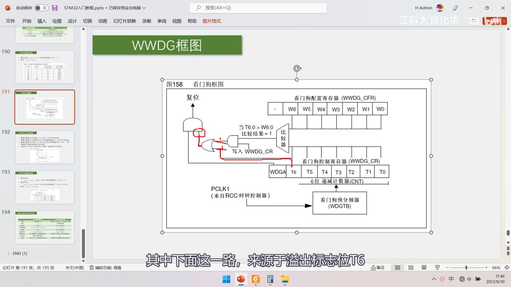
*图 12：图158 完整清晰版——复位 ← 与门 ← 或门（两路：T6 溢出、比较器）；右上 WWDG_CFR：W6～W0（窗口值）；比较器「当 T6:0 > W6:0 比较结果＝1」；「写入 WWDG_CR」；右下 WWDG_CR：WDGA + T6～T0（6 位递减计数器 CNT）；PCLK1（来自 RCC 时钟控制器）→ 看门狗预分频器（WDGTB）；字幕「其中下面这一路，来源于溢出标志位T6」*
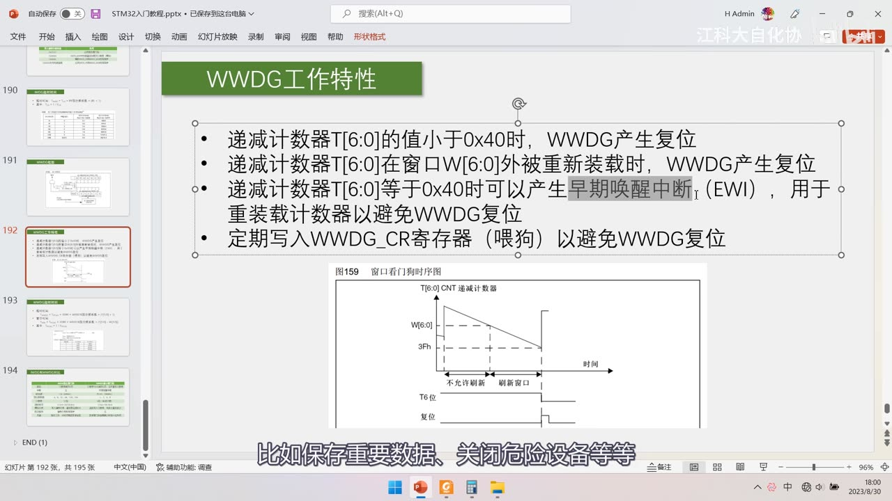
图 13：PPT「WWDG工作特性」4 条 + 图159 窗口看门狗时序图——①递减计数器 T[6:0] 的值*小于 0x40 时 WWDG 产生复位；②T[6:0] 在窗口 W[6:0] 外被重新装载时 WWDG 产生复位；③T[6:0] 等于 0x40 时可产生早期唤醒中断（EWI），用于重装载计数器以避免复位（高亮）；④定期写入 WWDG_CR 寄存器（喂狗）以避免复位；时序图含 W[6:0]、3Fh、不允许刷新/刷新窗口、T6 位、复位；字幕「比如保存重要数据、关闭危险设备等等」*
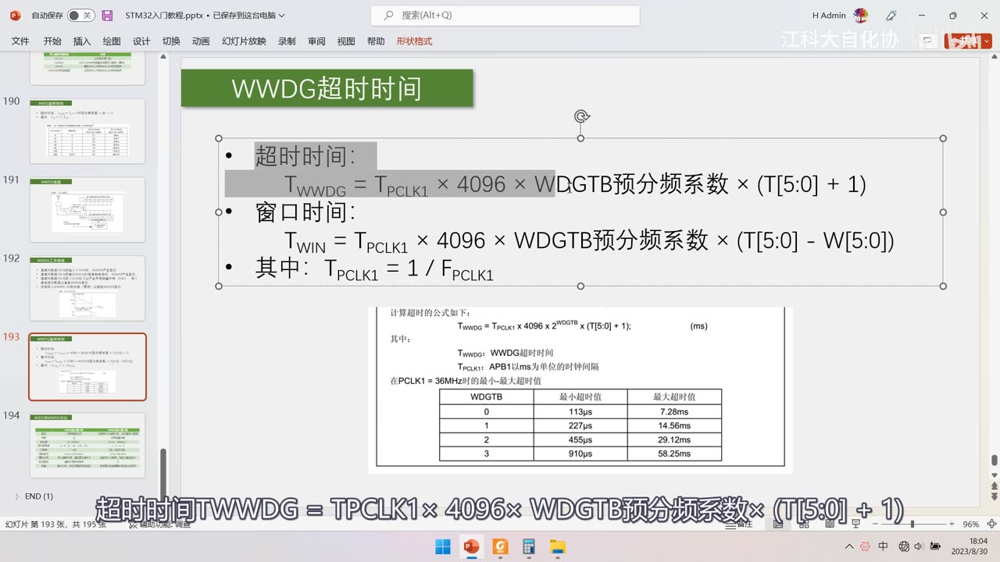
图 14：同页公式 + 灰底高亮「T[5:0] + 1」——强调用低 6 位有效计数（T6 只是溢出标志）；字幕重复念出整条公式
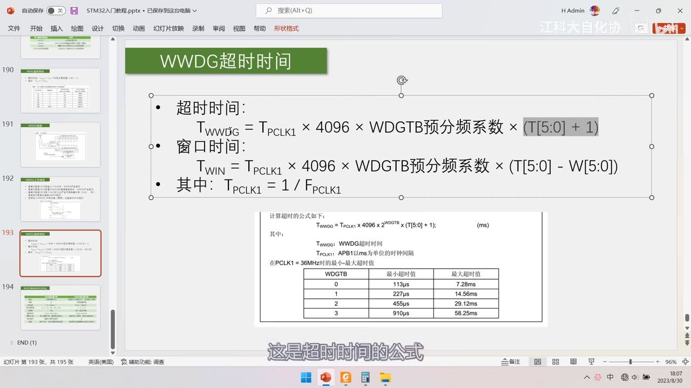
*图 15：PPT「WWDG超时时间」——T_WWDG = T_PCLK1 × 4096 × WDGTB 预分频系数 × (T[5:0] + 1)；T_WIN = T_PCLK1 × 4096 × WDGTB 预分频系数 × (T[5:0] − W[5:0])；T_PCLK1 = 1/F_PCLK1；手册表（PCLK1＝36MHz）：WDGTB 0/1/2/3 → 113µs～7.28ms / 227µs～14.56ms / 455µs～29.12ms / 910µs～58.25ms；字幕「这是超时时间的公式」*
5. IWDG 与 WWDG 对比
| 项目 | IWDG 独立看门狗 | WWDG 窗口看门狗 |
|---|---|---|
| 复位条件 | 计数器减到 0 后 | 计数器 T[5:0] 减到 0 后、或过早重装计数器 |
| 中断 | 无 | 早期唤醒中断（EWI） |
| 时钟源 | LSI 40kHz | PCLK1 36MHz |
| 预分频系数 | 4、8、32、64、128、256（对比表此项疑似漏 16；表83/手册为 4/8/16/32/64/128/256 七档） | 1、2、4、8 |
| 计数器 | 12 位 | 6 位（有效计数） |
| 超时时间 | 0.1ms～26214.4ms | 113µs～58.25ms |
| 喂狗方式 | 写入键寄存器，重装固定值 RLR | 直接写入计数器，写多少重装多少 |
| 防误操作 | 键寄存器和写保护 | 无 |
| 用途 | 独立工作，对时间精度要求较低 | 要求看门狗在精确计时窗口起作用 |
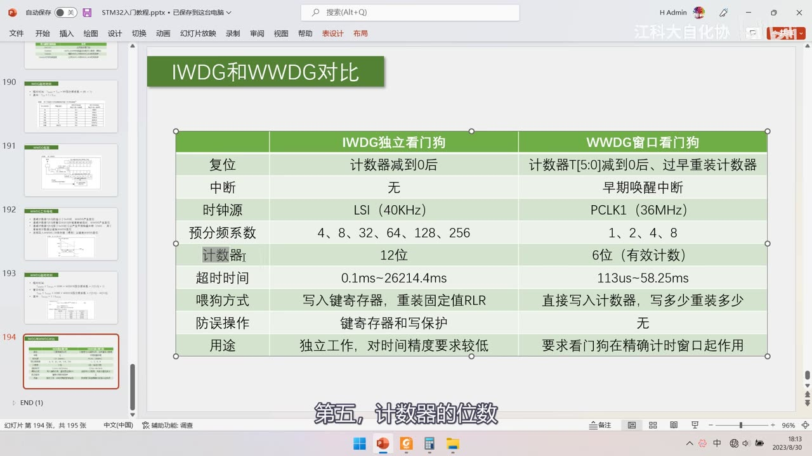
*图 16：PPT「IWDG和WWDG对比」完整 9 行表——复位（计数器减到 0 后 / 计数器 T[5:0] 减到 0 后、过早重装计数器）、中断（无 / 早期唤醒中断）、时钟源（LSI 40KHz / PCLK1 36MHz）、预分频系数（4、8、32、64、128、256 / 1、2、4、8）、计数器（12 位 / 6 位（有效计数））、超时时间（0.1ms～26214.4ms / 113us～58.25ms）、喂狗方式（写入键寄存器，重装固定值 RLR / 直接写入计数器，写多少重装多少）、防误操作（键寄存器和写保护 / 无）、用途；字幕「第五，计数器的位数」*
6. 手册精读
6.1 第 17 章 IWDG
- 结构：17.1 简介、17.2 主要特性、17.3 功能描述（含 17.3.3 框图）、17.4 寄存器描述、17.4.5 寄存器映像（表84）；
- LSI 实际频率在 30K～60K 之间变化、并不精确——所以 IWDG 超时时间只能按 40kHz 估算（这也正是「IWDG 对时间精度要求较低」的原因）；
- 键值表里只有「启动看门狗」指令，没有「关闭」指令——看门狗一旦开启就无法关闭（防止误操作关掉，「既然养了狗，怎么能让你随便弃养」）；
- IWDG 的 CNT 计数器不开放读写——运行中看不到当前计数值，对调试不友好；
- 表84 寄存器映像：
IWDG_KR@000h（KEY[15:0]，复位值全 0）、IWDG_PR@004h（PR[2:0]）、IWDG_RLR@008h（RL[11:0]，复位值 0xFFF）、IWDG_SR@00Ch（RVU/PVU）； - 注：若在应用中使用多个重装值或预分频值，必须在 RVU 位被清除后才能重新改变重装值、PVU 位清除后才能改变预分频值；不过在预分频/重装值更新后不必等 RVU/PVU 复位就可继续执行下面的代码（低功耗模式下写操作仍会继续完成）。
6.2 第 18 章 WWDG
- 结构：18.1 简介/主要特性、18.3 功能描述、18.4 如何编写看门狗超时程序、18.6 寄存器描述、18.6.4 寄存器映像（表85）；
- 警告：系统复位后必须始终置 T6 位为 1，以避免立即产生复位——因为 T6 一为 0 就判溢出；
- WDGA 位置 1 之后不能再关闭（只有复位能关掉）；
- 递减计数器处于自由运行状态：即使看门狗被禁止，计数器仍继续递减；
- 上电开启时一定要先给一个重装值，否则立即复位；
- 表85 寄存器映像：
WWDG_CR@000h（WDGA + T[6:0]，复位值 0 与 1111111）、WWDG_CFR@004h（EWI + WDGTB[1:0] + W[6:0]）、WWDG_SR@008h（EWIF 早期唤醒中断标志）。
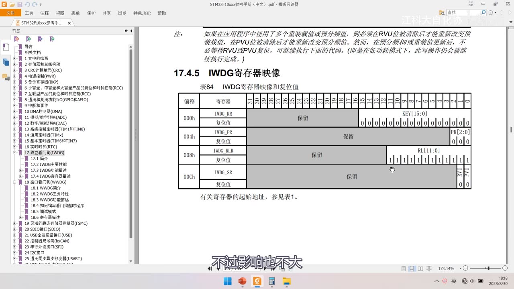
图 17：手册「17.4.5 IWDG寄存器映像 表84」——000h IWDG_KR KEY[15:0]；004h IWDG_PR PR[2:0]；008h IWDG_RLR RL[11:0]（复位值全 1）；00Ch IWDG_SR RVU/PVU；上方注：若在应用中使用多个重装载值或预分频值，须在 RVU 位被清除后才能重新改变预装载值、PVU 清除后才能改变预分频值…；左侧书签 17 独立看门狗(IWDG)；字幕「不过影响也不大」
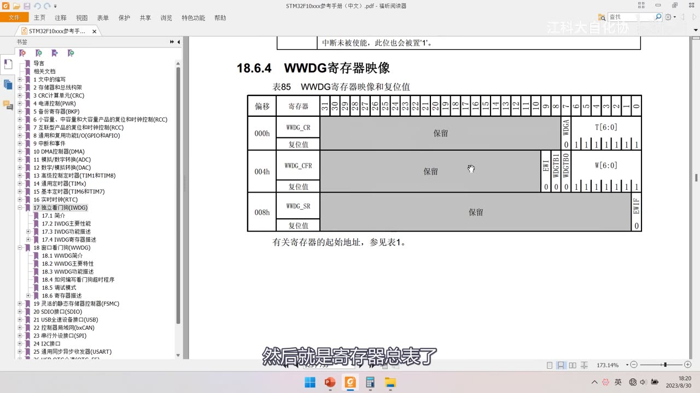
图 18：手册「18.6.4 WWDG寄存器映像 表85」——000h WWDG_CR（WDGA + T[6:0]，复位值 0 与 1111111）；004h WWDG_CFR（EWI + WDGTB[1:0] + W[6:0]）；008h WWDG_SR（EWIF）；左侧书签 18 窗口看门狗(WWDG)；字幕「然后就是寄存器总表了」
坑与易错点
- 本集不是从零写码课：片头只演示两个成品工程（含代码展示），其余全是 PPT + 手册。
- 看门狗必须自减、减到 0 直接复位、没有自动重装——手动重装就是「喂狗」。
- IWDG 减到 0 复位；WWDG 是 T[6:0] 减到小于 0x40（即到 0x3F）复位——不是减到 0。
T[6:0]与T[5:0]别混：T6 只是溢出标志，有效计数是低 6 位，公式里用(T[5:0]+1)。- WWDG 公式必须乘 4096（框图中未画出的固定分频），WDGTB 分频系数＝2^WDGTB。
- IWDG 键值：0xCCCC 启用、0xAAAA 喂狗、0x5555 解除写保护、其他值启用写保护；写 PR/RLR 前必须先写 0x5555。
- IWDG 位于 VDD 供电区，停机/待机下仍工作；IWDG_CNT 不开放读写。
- LSI 实际 30K～60K 不精确：超时只能按 40kHz 估算。
IWDG_SetReload(2500)×16×0.025ms≈1000.4ms——可用来自验公式（预分频是IWDG_Prescaler_16）。- 看门狗一旦开启就无法关闭（键值表无关闭指令；WWDG 的 WDGA 也只能靠复位清）。
- WWDG 复位后必须始终把 T6 置 1，否则立即复位；上电首次必须给重装值。
- 对比表里 IWDG 预分频疑似漏 16（列 4、8、32、64、128、256）——以表83/手册七档为准。
WWDG_SetWindowValue(0x40 + 21)：0x40 是 T6 为 1 的基准，+21＝0x55；喂狗要落在「窗口内、0x40 之上」的区间。- 喂狗频率：IWDG 演示 800ms < 1000ms；WWDG 演示 40ms 落在 30～50ms 窗口——别喂太早也别喂太晚。
- 硬件器件损坏时看门狗也救不了；不能因为有看门狗就写死循环。
时间轴
| 时间 | 内容 |
|---|---|
| 0:10 | 欢迎回来，本节学习 WDG 看门狗 |
| 0:13 | STM32 内置两个看门狗 |
| 0:18 | IWDG 独立看门狗、WWDG 窗口看门狗 |
| 1:06 | 先看第一个程序：独立看门狗 |
| 1:21 | 程序进来先判断复位来源 |
| 1:22 | 是看门狗复位就显示 IWDG RST |
| 1:26 | 然后清除复位标志 |
| 1:27 | 不是就显示 RST |
| 1:32 | 独立看门狗初始化 |
| 1:34 | 解除写保护、设置预分频 16 |
| 1:35 | 设置重装值 2500，注释 1000ms |
| 1:38 | 重装计数器、启用看门狗 |
| 1:39 | 主循环不断喂狗 |
| 1:46 | 喂狗间隔 200 加 600 共 800ms |
| 2:27 | 小于 1000ms 所以不会复位 |
| 2:52 | 看第二个程序：窗口看门狗 |
| 3:12 | 同样先判断复位来源 |
| 3:19 | 开启 WWDG 的 APB1 时钟 |
| 3:21 | 设置预分频 8 |
| 3:25 | 设置窗口值 0x40 加 21，注释 30ms |
| 3:34 | 主循环延时 20 加 20 共 40ms 喂狗 |
| 3:38 | 40ms 落在窗口内 |
| 3:50 | 现象：WWDG TEST |
| 4:03 | 按按键只能模拟晚喂狗 |
| 4:21 | 接下来看 PPT：WDG 简介 |
| 4:25 | WDG 是 Watchdog 看门狗 |
| 4:37 | 可以监控程序的运行状态 |
| 6:03 | 设计漏洞、硬件故障、电磁干扰 |
| 6:39 | 出现卡死或跑飞时及时复位 |
| 6:41 | 避免长时间罢工，保证可靠性安全性 |
| 7:42 | 本质是一个定时器 |
| 8:09 | 指定时间内没喂狗就自动复位 |
| 8:17 | 红笔标出三个要点 |
| 8:18 | STM32 内置两个看门狗 |
| 8:38 | IWDG 独立工作、时间精度要求低 |
| 8:50 | WWDG 要求在精确计时窗口起作用 |
| 8:53 | 为什么需要看门狗 |
| 8:59 | 复杂项目状态极多，bug 无法避免 |
| 9:02 | 本质是定时器这句高亮 |
| 9:03 | 常见解决手段：已知 bug 写处理逻辑 |
| 9:06 | 用看门狗兜底 |
| 9:09 | 看门狗不能解决 bug 本身 |
| 9:17 | 但能让偶发卡死的程序回到正轨 |
| 9:34 | 局限性：硬件关键器件损坏复位也没用 |
| 9:37 | 不能因为有看门狗就写死循环 |
| 9:43 | 和普通定时器的区别 |
| 9:47 | 看定时中断基本结构图 |
| 9:54 | 时基单元由预分频器、计数器、重装器组成 |
| 10:15 | 定时器减到 0 产生更新事件和中断 |
| 10:23 | 并自动重装 |
| 10:25 | 看门狗必须自减 |
| 10:29 | 减到 0 直接产生复位 |
| 10:31 | 没有自动重装，要手动重装 |
| 10:34 | 手动重装就是喂狗 |
| 10:39 | 下面看独立看门狗的框图 |
| 10:52 | 图157 独立看门狗框图 |
| 10:56 | LSI 40kHz 输入 |
| 11:01 | 经过 8 位预分频器 |
| 11:27 | 驱动 12 位递减计数器 |
| 11:38 | 减到 0 产生 IWDG 复位 |
| 11:42 | 12 位计数器最大值 4095 |
| 11:47 | 重装寄存器 IWDG_RLR |
| 12:12 | 状态寄存器 IWDG_SR 基本不用看 |
| 12:22 | 键寄存器 IWDG_KR |
| 12:30 | 看门狗功能处于 VDD 供电区 |
| 12:35 | 所以停机和待机时仍能工作 |
| 13:07 | 键寄存器是核心 |
| 13:09 | 本质上是控制寄存器 |
| 13:21 | 用整个寄存器写特定值代替写一位 |
| 13:31 | 这样抗干扰能力强 |
| 13:33 | 0xCCCC 启用独立看门狗 |
| 15:09 | 0xAAAA 把 RLR 重新加载到计数器 |
| 15:11 | 也就是喂狗 |
| 15:13 | 0x5555 解除 PR 和 RLR 写保护 |
| 15:21 | 其他值启用写保护 |
| 16:00 | 写 PR 和 RLR 前先写 0x5555 |
| 16:03 | 写完再写任意值恢复保护 |
| 16:09 | 看超时时间公式 |
| 16:15 | T_IWDG 等于 T_LSI 乘预分频乘 RL 加 1 |
| 16:48 | T_LSI 等于 1 除 40kHz |
| 17:06 | 也就是 0.025ms |
| 17:27 | 超时频率等于 LSI 频率除预分频除重装值 |
| 17:37 | 看表83 超时时间表 |
| 17:57 | 4 分频最短 0.1ms 最长 409.6ms |
| 18:08 | 8 分频 0.2 到 819.2ms |
| 18:15 | 16 分频 0.4 到 1638.4ms |
| 18:17 | 红笔写 0.025ms，圈出 RL 加 1 |
| 18:22 | 32 分频 0.8 到 3276.8ms |
| 18:35 | 64 分频 1.6 到 6553.6ms |
| 18:46 | 128 分频 3.2 到 13107.2ms |
| 18:53 | 256 分频 6.4 到 26214.4ms |
| 19:15 | 分频翻一倍超时时间也翻一倍 |
| 19:42 | 回到程序验算 2500 是 1000ms |
| 19:57 | 用 16 分频验算正好 1000ms 左右 |
| 19:59 | 接下来看窗口看门狗 |
| 20:03 | WWDG 用 PCLK1 36MHz |
| 20:06 | 先固定 4096 分频 |
| 20:08 | 再看门狗预分频器 WDGTB |
| 20:15 | 1、2、4、8 四种分频 |
| 20:17 | 然后驱动 6 位递减计数器 |
| 21:04 | 每来一个时钟自减一次 |
| 21:07 | 红笔写 36M 指向 WDGTB |
| 21:33 | 计数器值在 WWDG_CR 里 |
| 21:39 | 含 WDGA 激活位和 T6 到 T0 |
| 21:56 | T6 是溢出标志位 |
| 23:08 | 有效计数是低 6 位 |
| 23:19 | 窗口值在 WWDG_CFR 里 |
| 23:22 | 比较器当 T6:0 大于 W6:0 结果为 1 |
| 23:31 | 两路复位信号经或门 |
| 24:02 | 第一路是 T6 溢出标志位 |
| 24:13 | 第二路是窗口比较结果 |
| 24:18 | 再经 WDGA 与门输出复位 |
| 24:49 | 图158 整体再看一遍 |
| 24:52 | 下面这一路来源于溢出标志位 T6 |
| 26:01 | 看 WWDG 的工作特性 |
| 26:04 | 第一条：T6:0 小于 0x40 时复位 |
| 26:34 | 这是喂狗太晚 |
| 26:36 | 第二条：窗口外重装时复位 |
| 26:38 | 这是喂狗太早 |
| 27:21 | 第三条：等于 0x40 时产生 EWI |
| 27:28 | 用于重装载计数器避免复位 |
| 28:00 | 俗称死前中断 |
| 28:28 | 可以保存重要数据、关闭危险设备 |
| 28:39 | 第四条：定期写 WWDG_CR 喂狗 |
| 28:46 | 看图159 时序图 |
| 28:49 | 纵轴是 T6:0，横轴是时间 |
| 29:07 | 画出窗口值和 3Fh |
| 29:09 | 分不允许刷新和刷新窗口两段 |
| 29:19 | T6 位在 3Fh 到 0 时翻转并复位 |
| 29:33 | 看超时时间公式 |
| 29:37 | T_WWDG 等于 T_PCLK1 乘 4096 乘 WDGTB 乘 T5:0 加 1 |
| 29:40 | 窗口时间公式 T5:0 减 W5:0 |
| 30:10 | 4096 是框图中没画出的固定分频 |
| 30:38 | WDGTB 分频系数是 2 的 WDGTB 次方 |
| 30:43 | 手册表：WDGTB 0 是 113us 到 7.28ms |
| 30:47 | WDGTB 1 是 227us 到 14.56ms |
| 30:50 | WDGTB 2 是 455us 到 29.12ms |
| 30:53 | WDGTB 3 是 910us 到 58.25ms |
| 31:37 | 窗口时间手册不给表，要自己算 |
| 32:11 | 红圈圈出 T5:0 加 1 |
| 32:40 | 窗口时间要按需求反推窗口值 |
| 33:10 | 先确定超时时间再算窗口时间 |
| 33:40 | 这样就能配置出合适的喂狗窗口 |
| 34:14 | 看两个看门狗的对比 |
| 34:18 | 第一项复位条件 |
| 34:19 | IWDG 是减到 0 后复位 |
| 34:22 | WWDG 是减到 0 后或过早重装 |
| 34:26 | 对比表完整 8 行 |
| 34:28 | 第二项中断：IWDG 无，WWDG 有 EWI |
| 34:39 | 第三项时钟源：LSI 40kHz 和 PCLK1 36MHz |
| 34:50 | 第四项预分频系数 |
| 34:54 | 第五项计数器的位数 |
| 35:02 | 第六项超时时间 |
| 35:23 | 第七项喂狗方式 |
| 35:36 | 第八项防误操作 |
| 35:59 | 最后是用途 |
| 36:19 | 看参考手册第 17 章 IWDG |
| 36:31 | 表84 IWDG 寄存器映像 |
| 37:05 | IWDG_KR 键寄存器 |
| 37:24 | IWDG_PR 预分频 |
| 37:25 | IWDG_RLR 重装寄存器 |
| 37:26 | IWDG_SR 状态寄存器 |
| 37:33 | 注：改变重装值要等 RVU 清除 |
| 37:35 | LSI 实际在 30K 到 60K 之间变化 |
| 38:05 | 所以超时时间只能按 40kHz 估算 |
| 38:26 | 看第 18 章 WWDG |
| 38:29 | 复位后必须始终置 T6 为 1 |
| 38:39 | WDGA 置 1 后不能再关闭 |
| 38:49 | 递减计数器是自由运行状态 |
| 39:05 | 上电开启时一定要先给重装值 |
| 39:12 | 看 18.6 寄存器描述 |
| 39:24 | WWDG_CR 含 WDGA 和 T6 到 T0 |
| 39:30 | WWDG_CFR 含 EWI、WDGTB、W6 到 W0 |
| 39:39 | WWDG_SR 只有 EWIF |
| 39:54 | 表85 WWDG 寄存器映像 |
| 40:01 | 本小节课到这里就结束了 |
存疑
- 本集文本来自画面硬字幕的 OCR（PP-OCRv4，source=subtitle-ocr，752 段），不是 ASR。错字主要是
运行→ 「云行」（6 处）、看门狗→ 「看润狗/看闪狗/看阅狗」（4 处）、循环→ 「盾环」（2 处）、数据→ 「数居」（1 处）；并混入幻灯片页码与英文原文——已按画面/上下文校正。 - 本集是「片头演示成品 + 理论详解」的混合课：00:00–04:15 只演示两个已写好的工程，没有从零写码；不要把本集写成纯代码课或纯理论课。
- 库函数只在片头展示：IWDG 侧
IWDG_WriteAccessCmd/IWDG_SetPrescaler/IWDG_SetReload/IWDG_ReloadCounter/IWDG_Enable；WWDG 侧RCC_APB1PeriphClockCmd/WWDG_SetPrescaler/WWDG_SetWindowValue；复位标志RCC_GetFlagStatus(RCC_FLAG_IWDGRST/WWDGRST)+RCC_ClearFlag()。本集无WWDG_Enable/WWDG_SetCounter/WWDG_EnableIT的完整帧（代码里那几行按片头画面写，细节以 [14-2] 或原工程为准）。 - 两处「减到 0」表述不同：IWDG 是计数减到 0 复位；WWDG 是 T[6:0] 减到小于 0x40（即 0x3F）复位，不是减到 0。
T[6:0]与T[5:0]口径：WWDG_CR的 CNT 是 7 位（T6 单独作溢出标志），有效计数是 6 位 T[5:0]，公式用(T[5:0]+1)。- 对比表 IWDG 预分频疑似漏 16：表列「4、8、32、64、128、256」，而表83/手册是 4/8/16/32/64/128/256 七档（PR[2:0] 编码 0～7，6 与 7 都是 /256）——笔记以表83/手册为准并注明差异。
- WWDG 公式必须乘框图中未画出的固定 4096；WDGTB 分频系数＝2^WDGTB。
- LSI 实际 30K～60K 不精确，IWDG 超时只能按 40kHz 估算。
IWDG_SetReload(2500)×IWDG_Prescaler_16× 0.025ms ≈ 1000.4ms（≈ 注释的 1000ms），可自验公式。- 三个不可逆/易忘点：①看门狗开启后无法关闭（键值表无关闭指令；WWDG 的 WDGA 只能靠复位清）②WWDG 复位后 T6 必须为 1、上电首给重装值，否则立即复位③IWDG 的 CNT 不开放读写。
WWDG_SetWindowValue(0x40 + 21)：0x40 是 T6 为 1 的基准，+21＝0x55；与「窗口 30ms」注释对应（喂狗要落在窗口内、0x40 之上）。- 片尾 40:04「本小节课到这里就结束了」，无下集预告。
- 图 4 画面里的
fatal error … core_cm3.h file not found：这是复制工程后旧编译缓存/路径没更新的遗留报错，作者在本集没有处理它，与窗口看门狗代码本身无关。